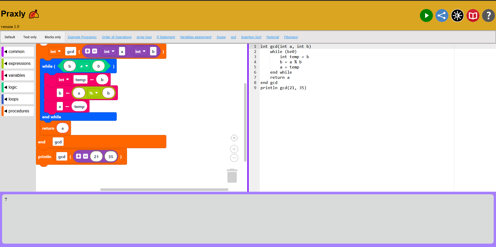
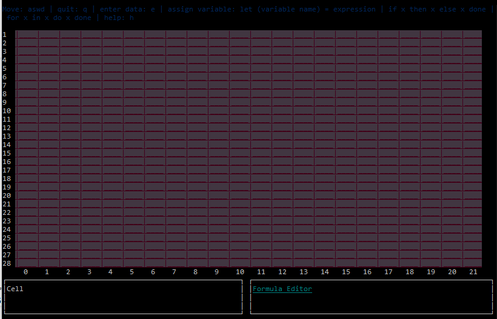

Introduction
Hi, I'm Ben. I am a Software Developer from Winchester, VA. I am currently looking for a software development job in Harrisonburg, Rockingham County, or Shenandoah county.
Skills
- Programming
Proficient in Java, C, Python, Visual Basic, Microsoft SQL Server, HTML, CSS, and Javascript - Leadership
I get along well with others and like to work as a partnership or team - Communication
I overcame a language barrier working with students from diverse backgrounds at a summer refugee coding camp in the summer of 2023.
Education

I have Bachelor's of Science degree in Computer Science from James Madison University. I graduated with Honors and Distinction in May 2024. My minor was in Mathematics.
Experience
- American Woodmark Corporation - Software Developer
- JMU Department of Computer Science - Lead TA
Fall 2023 - Spring 2024 - JMU Research Assistant
Spring 2023 - Spring 2024 (built Praxly) - JMU Department of Computer Science - TA
Fall 2022 - Fall 2023
Notable Projects
-

- Praxly - an online compiler for the Virginia Praxis Exam pseudocode That supports both block-based and text-based programming
- Y86 Interpreter - built to translate Y86 Machine code to assembly
Notable Projects
-

- Gridkid - a spreadsheet with a text based interface that can be used in the terminal. It supports basic functions with cell references.
- Decaf Compiler - a compiler for the decaf language. This project was building a compiler for a made up language in my compilers class.
Contact Information
You can reach me at benjaminsaupp@gmail.com or connect with me on linkedin.